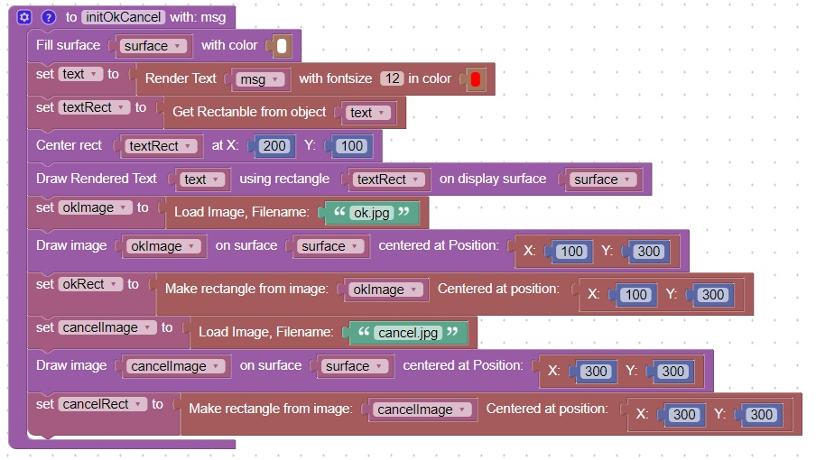
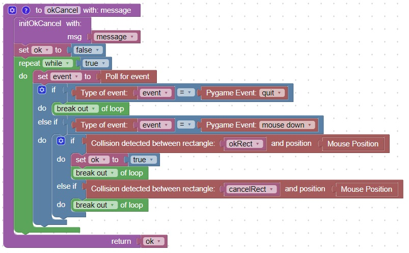

You can display text and then return True or False based on which image is clicked on
Code
This code will initialize the variables required for the ok/Cancel function

This code will perform an ok/Cancel function

This code will shows an example call of the ok/Cancel function
This is what the screen looks like when it is executed
This is what the console looks like when it is run twice and ok is selected the first time, and cancel is selected the second time